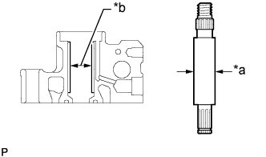
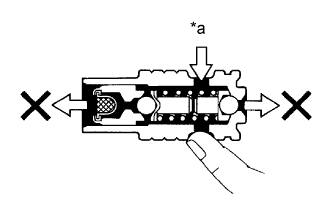
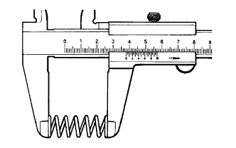

ЛОПАСТНОЙ НАСОС (для моделей с 5L-E) > ПРОВЕРКА |
| 1. ПРОВЕРЬТЕ ВАЛ ЛОПАСТНОГО НАСОСА И ВТУЛКУ В КОЖУХЕ ЛОПАСТНОГО НАСОСА |
|  |
С помощью микрометра измерьте наружный диаметр вала лопастного насоса.
| *a | Наружный диаметр |
| *b | Внутренний диаметр |
С помощью штангенциркуля измерьте внутренний диаметр втулки переднего кожуха лопастного насоса.
Рассчитайте масляный зазор.
Масляный зазор = внутренний диаметр втулки - наружный диаметр вала.
| 2. ПРОВЕРЬТЕ РОТОР ЛОПАСТНОГО НАСОСА И ПЛАСТИНЫ ЛОПАСТЕЙ |
 |
Микрометром измерьте толщину пластин лопастей насоса.
| *a | Толщина |
 |
С помощью плоского щупа измерьте зазор между боковой поверхностью канавки ротора лопастного насоса и пластинами лопастей.
| *1 | Плоский щуп |
| 3. ПРОВЕРЬТЕ КЛАПАН УПРАВЛЕНИЯ РАСХОДОМ |
Смажьте клапан управления расходом жидкостью для механизма рулевого управления с усилителем и убедитесь, что он свободно спускается в клапанное отверстие под собственным весом.
Если клапан не опускается свободно в отверстие, замените лопастной насос.
|  |
Проверьте герметичность клапана управления расходом. Закройте одно из отверстий и подайте сжатый воздух под давлением 392-490 кПа (4-5 кгс/см2, 57-71 фунт на кв. дюйм) в отверстие с противоположной стороны и убедитесь, что воздух не выходит из торцевых отверстий.
| *a | Сжатый воздух |
| 4. ПРОВЕРЬТЕ ПРУЖИНУ СЖАТИЯ КЛАПАНА УПРАВЛЕНИЯ РАСХОДОМ |
|  |
С помощью штангенциркуля измерьте длину пружины сжатия клапана управления расходом в свободном состоянии.
| 5. ПРОВЕРЬТЕ ШТУЦЕР ВЫПУСКНОГО ОТВЕРСТИЯ |
Если основание штуцера выпускного отверстия имеет серьезные повреждения, это может привести к утечке жидкости. Если основание штуцера повреждено, замените лопастной насос в сборе.